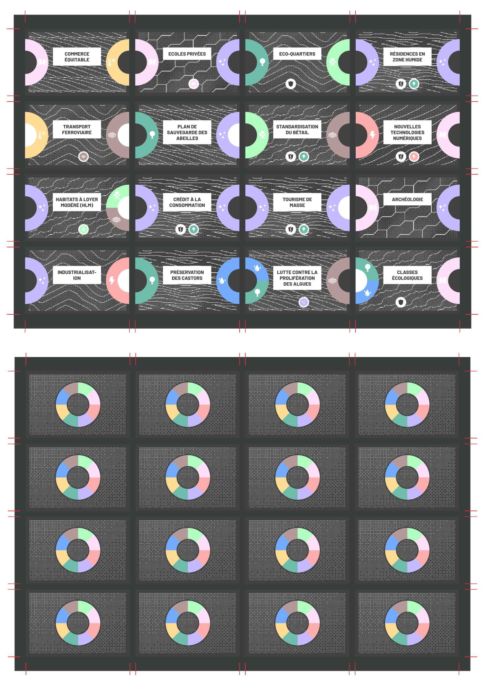
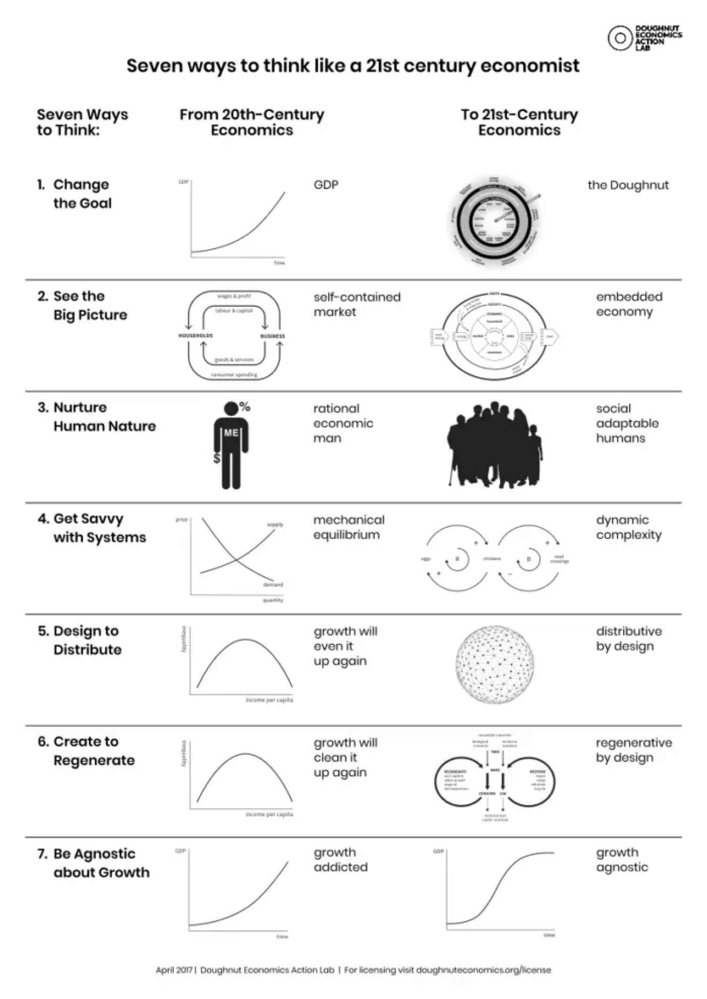
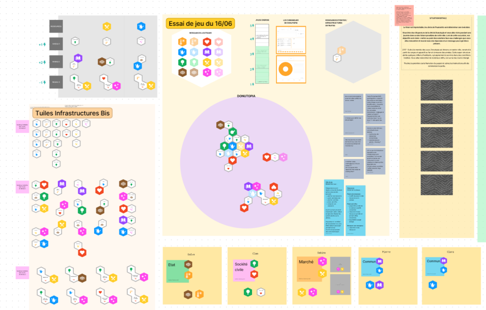
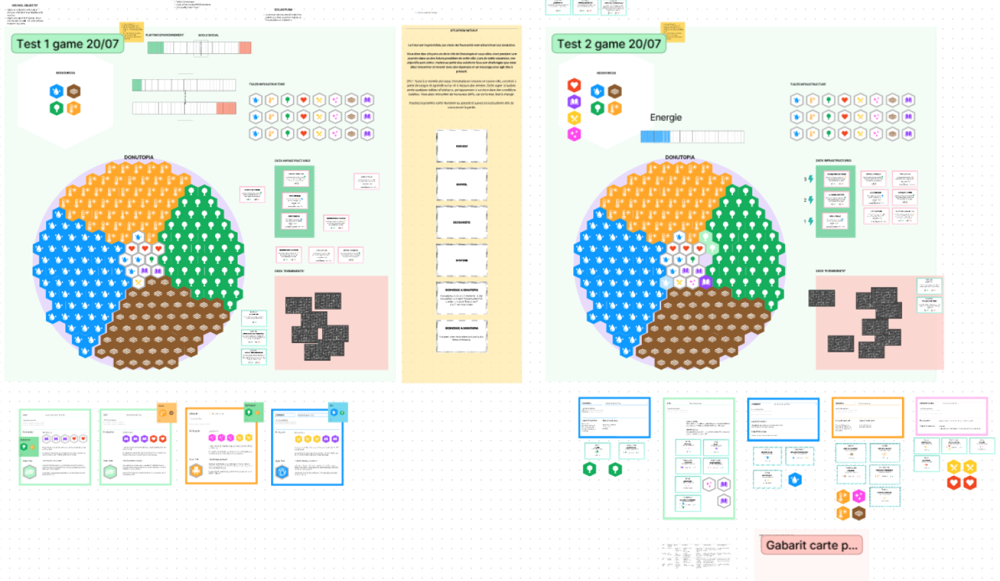
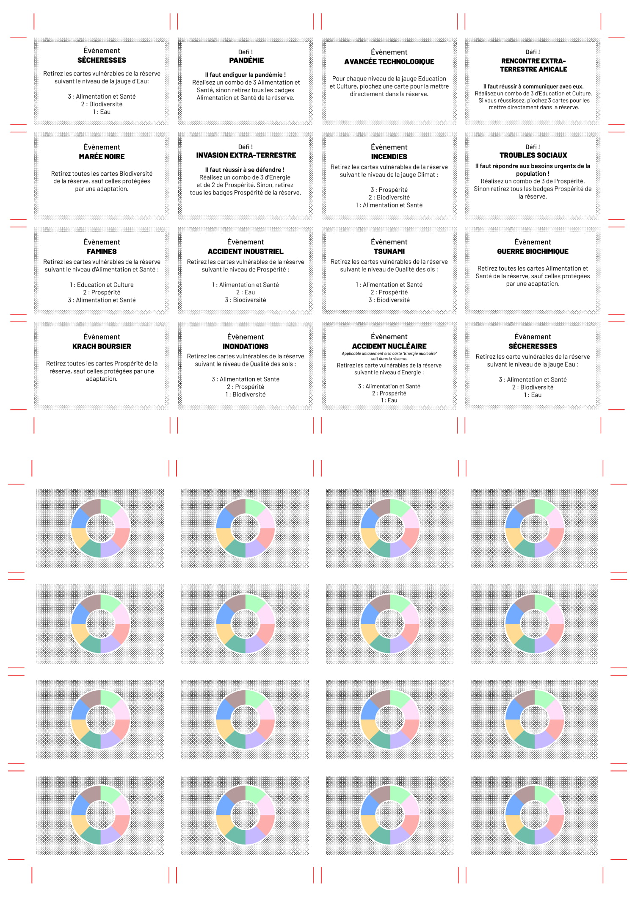
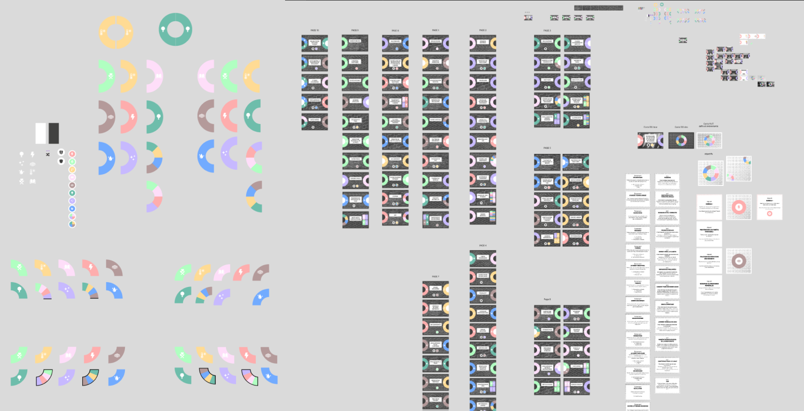
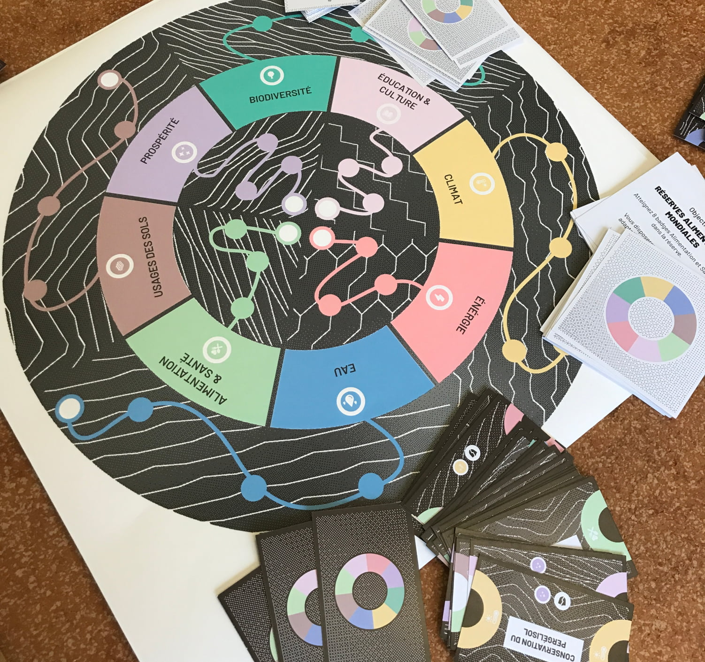
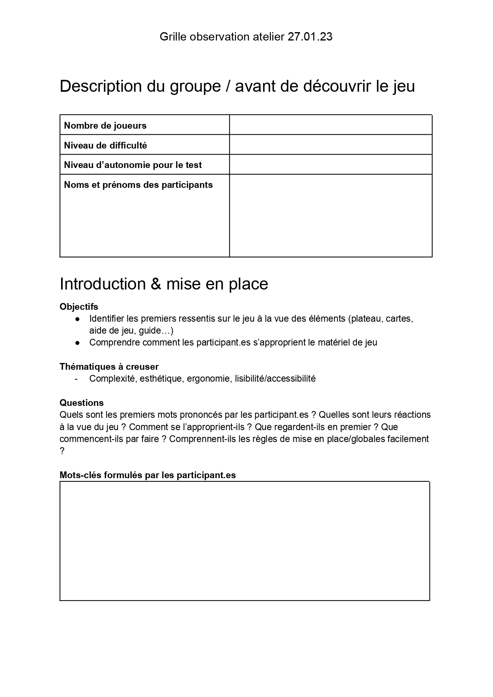

Donutopia
Jeu collaboratif - Nouveaux imaginaires
Jeu de plateau collaboratif, utilisant comme base la théorie du Donut de Kate Raworth
Figma, Prototype imprimé
Par la création d'un nouveau récit de société désirable au travers d'un jeu collaboratif, l'objectif de Donutopia est d'encapaciter les joueurs pour faciliter un passage à l'action "dans la vraie vie”.
Mon rôle dans le projet : graphisme d'un prototype de jeu, animation d'un groupe de testeurs, participation à l'élaboration d'une nouvelle version de la mécanique du jeu suite aux retours des testeurs.







